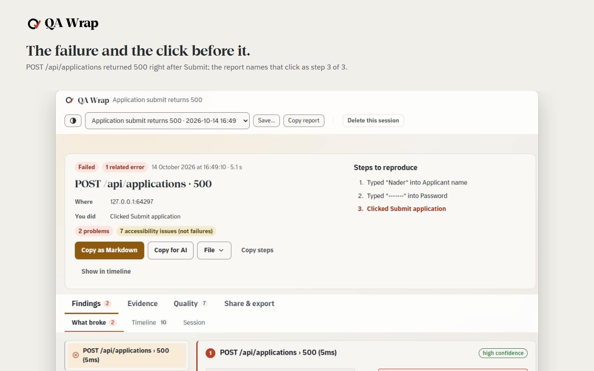
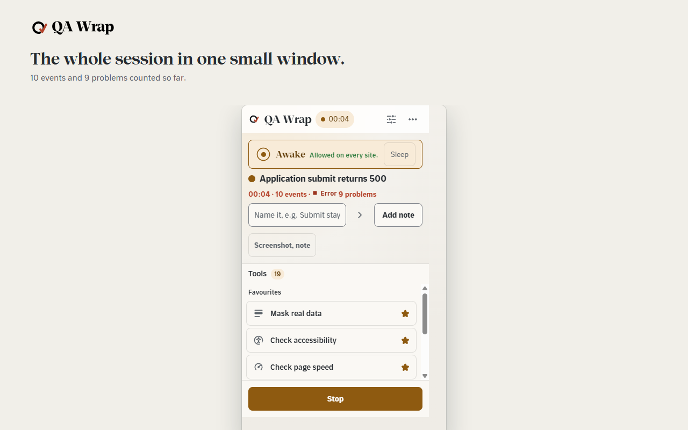
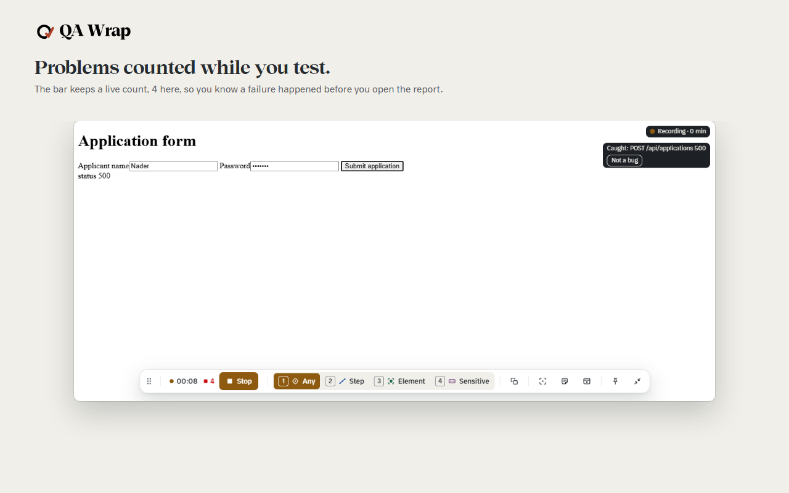
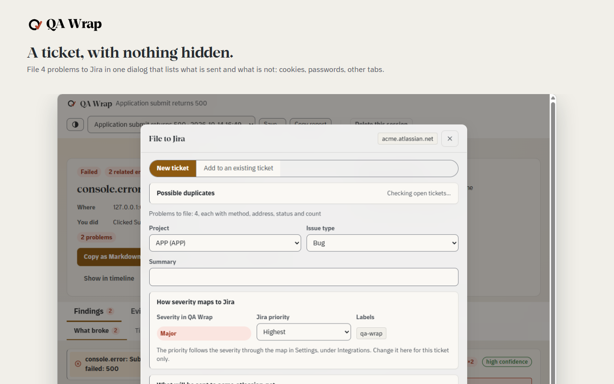
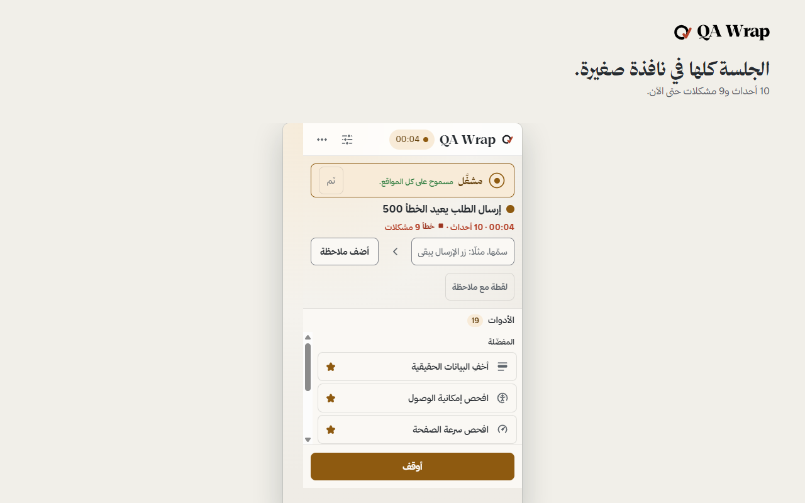
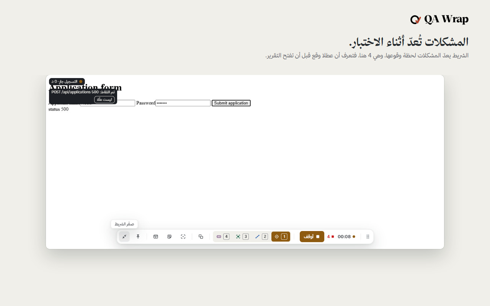
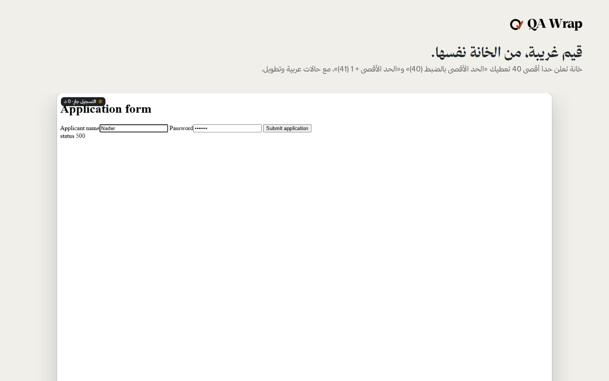
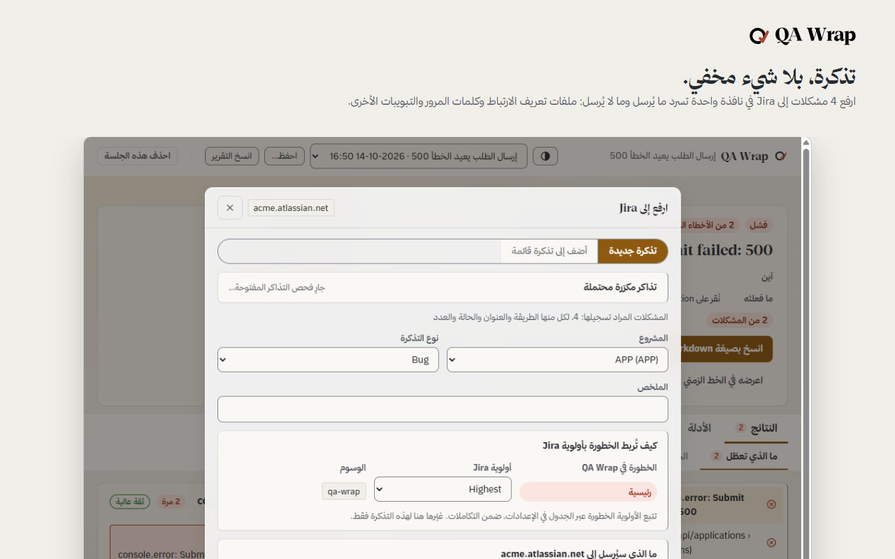

QA Wrap
Every failure, traced.
Free and local. Record a test session, see the click behind each failure, and hand over a record of the session: filed to Jira, a tracker or a chat, or saved as files in a folder you choose.
Download the latest release Free, MIT licence. See Installing it.
See it
Watch the 40-second film
What it does
Three things, in this order
Record a session
Wake it in the window you are testing, name the charter, press Start. From then on it keeps your clicks, typing, form steps and navigations, with a locator for each element you touched, alongside the page's own network requests and console output, across every tab in that window. It stays asleep in every window you did not wake.
Every failure is linked to the click that caused it
When a request fails or the console throws, the report puts the action immediately before it next to the failure, with the gap between them in milliseconds and how confident the match is. The chain is built while you test, not reconstructed afterwards from a video and your memory of what you pressed.
Filed as a report you hand over
Press Stop and it is written: a headline, the cause and effect chain, the screenshots and recordings, the accessibility and page speed findings, and a timeline you can scrub. Take it out as a defect report or a test case to ISO/IEC/IEEE 29119-3, a Playwright page object with locators verified against the page, a Postman collection, JUnit, HAR, Excel, Markdown or JSON. Or file it into Jira, GitHub, Linear, Trello, ClickUp or Asana, once you have set that up and pressed the button.
The toolkit
Nineteen tools, in four groups
Laid out as the test activities: capture the evidence, let the machine check what it can, design the values worth trying, then break things on purpose. One line each, no more, because the button beside it says the rest.
| Group | Tool | What it does |
|---|---|---|
| Capture | Photograph the page | Photograph the page and keep it with the session. |
| Record the screen | Film this tab, or the whole screen, into a video kept with the session. | |
| Check another size | Open this same page again in a real window at a phone, tablet or laptop size. | |
| Mask real data | Cover anything on the page so it never reaches a picture, a video or the report. | |
| Check | Check accessibility | List what would stop somebody using this page with a screen reader or a keyboard. |
| Check page speed | Measure how fast this page really drew and answered, logged in and mid-flow. | |
| Check the links | Ask every link on the page whether it still answers. | |
| Measure code coverage | Measure which of this page's own JavaScript actually ran while you used it. | |
| Check the fine print | Check the legal surface of the page: policies, consent, trackers, who is behind it. | |
| Design | Design the values | Point at a field and get the handful of values worth testing, and why each one. |
| Try nasty values | Point at any field and get the awkward values built for that exact field. | |
| Fill the form | Fill every field at once with a value a tester would have chosen, and name what it could not. | |
| Harvest the page | Read every control on the page into a page object a test suite can use. | |
| Copy a locator | Point at anything and get the one line of code a test needs to find it again. | |
| Draw the flow | Turn what you just did into a workflow diagram on one page. | |
| Reverse-engineer the spec | Read this page back as a draft specification, in Arabic and English. | |
| Send a request | Call the site's own API as the user who is logged in, without copying a token into another app. | |
| Break | Break a request | Make the site fail on purpose, then stop it failing without reloading anything. |
| Stress the layout | Flip the page right-to-left and lengthen every label, the way a translation would. |
Screens
What you are looking at




Local-first
Nothing leaves your machine
There is no QA Wrap server, and the only destinations are the Jira site, tracker or webhook you configure. Sessions, screenshots and recordings are written to IndexedDB inside your own browser profile. The extension makes no request of its own, carries no analytics and no crash reporting, and loads no remote code; the accessibility engine is bundled in the package.
Data leaves only when you configure Jira, a tracker or a webhook in Settings and press a button that names where it is going. Password fields and cookie values are not written into a session or an export, and you can mask anything on the page by hand, with an opaque block that holds through every screenshot and every navigation for the rest of the session.
Finished sessions are deleted after 30 days by default, media included. The whole policy, including the standards each control answers to, is on the privacy page.
Browsers
Two packages, one codebase
The content scripts, the interface, the exporters and the ISTQB model are identical in both. Only the manifest differs, and only where an engine forces it.
| Browser | Engine | What you get |
|---|---|---|
| Chrome | Chromium | The reference build. Every suite runs against this one. |
| Edge | Chromium | Identical to the Chrome build. Listed separately because the store is. |
Installing it
Download and install
- Open the latest release and download the zip for your browser. Unzip it to a folder you will keep.
- Open the browser's extensions page, turn on Developer mode, press Load unpacked and choose the folder. You do this once.
- Updates are automatic after that: QA Wrap checks the release list once a day and offers the new version with one press.
The source, the build commands and the tests are in the repository. Something went wrong? The support page says what to send.
Privacy, terms and licence
Read the privacy policy and the terms. QA Wrap is released under the MIT licence; third-party components keep their own licences.
Credits and contact
Made by Nader Alzghoul (NJ-Burrito): LinkedIn · GitHub · portfolio. Contact: naderalzghoulbusiness@gmail.com.
QA Wrap
كل عطل، متتبع.
مجانية ومحلية. سجل جلسة اختبار، وانظر النقرة التي تقف وراء كل عطل، وسلم سجلا للجلسة: يرفع إلى Jira أو أداة تتبع أو محادثة، أو يحفظ ملفات في مجلد تختاره.
نزّل آخر إصدار مجاني، برخصة MIT. راجع كيفية التثبيت.
شاهدها
شاهد الفيلم في 40 ثانية
ما الذي تفعله الأداة
ثلاثة أمور، بهذا الترتيب
سجل جلسة
أيقظها في النافذة التي تختبرها، سم ميثاق الاختبار، ثم اضغط ابدأ. من تلك اللحظة تحفظ الأداة نقراتك، وما تكتبه، وخطوات النماذج، والتنقلات، مع محدد لكل عنصر لمسته، إلى جانب طلبات الشبكة الخاصة بالصفحة نفسها ومخرجات وحدة التحكم، عبر كل تبويب في تلك النافذة. وتبقى نائمة في أي نافذة لم توقظها.
كل عطل مرتبط بالنقرة التي تسببت فيه
حين يفشل طلب أو تلقي وحدة التحكم خطأ، يضع التقرير الإجراء السابق مباشرة بجانب العطل، مع الفارق الزمني بينهما بالمللي ثانية ومدى الثقة بهذا الربط. تبنى السلسلة أثناء اختبارك، لا بإعادة تركيبها لاحقا من فيديو وذاكرتك عما ضغطته.
يودع تقريرا تسلمه
اضغط أوقف ويكتب التقرير: عنوان، وسلسلة السبب والأثر، ولقطات الشاشة والتسجيلات، ونتائج إمكانية الوصول وسرعة الصفحة، وخط زمني يمكنك تصفحه. أخرجه تقرير عطل أو حالة اختبار وفق ISO/IEC/IEEE 29119-3، أو كائن صفحة Playwright بمحددات تحققت من الصفحة، أو مجموعة Postman، أو JUnit، أو HAR، أو Excel، أو Markdown، أو JSON. أو أودعه في Jira أو GitHub أو Linear أو Trello أو ClickUp أو Asana، متى أعددت ذلك وضغطت الزر.
مجموعة الأدوات
تسع عشرة أداة، في أربع مجموعات
مرتبة على شكل أنشطة الاختبار: التقط الدليل، دع الآلة تفحص ما تستطيعه، صمم القيم الجديرة بالتجربة، ثم أخل بالأمور عمدا. سطر واحد لكل أداة، لا أكثر، لأن الزر المجاور لها يقول الباقي.
| المجموعة | الأداة | ما تفعله |
|---|---|---|
| التقاط | التقط صورة للصفحة | التقط صورة للصفحة واحتفظ بها مع الجلسة. |
| سجل الشاشة | صور هذا التبويب، أو الشاشة كاملة، في مقطع فيديو يحفظ مع الجلسة. | |
| جرب مقاسا آخر | افتح الصفحة نفسها من جديد في نافذة حقيقية بمقاس هاتف أو جهاز لوحي أو حاسوب محمول. | |
| أخف البيانات الحقيقية | غط أي عنصر في الصفحة حتى لا يصل إلى صورة أو فيديو أو التقرير. | |
| الفحص | افحص إمكانية الوصول | اعرض ما قد يمنع شخصا من استخدام هذه الصفحة بقارئ الشاشة أو لوحة المفاتيح. |
| افحص سرعة الصفحة | قس سرعة رسم هذه الصفحة واستجابتها فعليا، عند الدخول وفي منتصف العملية. | |
| افحص الروابط | اسأل كل رابط في الصفحة إن كان لا يزال يستجيب. | |
| قس تغطية الشيفرة | قس أي جزء من شيفرة هذه الصفحة نفذ فعليا أثناء استخدامك لها. | |
| افحص الشروط الدقيقة | افحص الجانب القانوني للصفحة: السياسات، والموافقة، وأدوات التتبع، ومن يقف خلفها. | |
| التصميم | صمم القيم | أشر إلى حقل واحصل على مجموعة القيم الجديرة بالاختبار، ولماذا اختيرت كل قيمة. |
| جرب قيما خبيثة | أشر إلى أي حقل واحصل على القيم الصعبة المصممة لذلك الحقل بالتحديد. | |
| املأ النموذج | املأ كل حقل دفعة واحدة بقيمة كان سيختارها مختبر، مع تسمية ما تعذر ملؤه. | |
| احصد الصفحة | اقرأ كل عنصر تحكم في الصفحة في كائن صفحة تستخدمه مجموعة اختبارات. | |
| انسخ محدد عنصر | أشر إلى أي عنصر واحصل على سطر الشيفرة الذي يحتاجه الاختبار ليجده مرة أخرى. | |
| ارسم مخطط سير العمل | حول ما فعلته للتو إلى مخطط سير عمل في صفحة واحدة. | |
| استخرج المواصفة | اقرأ هذه الصفحة من جديد بوصفها مسودة مواصفة، بالعربية والإنجليزية. | |
| أرسل طلبا | ناد واجهة برمجة تطبيقات الموقع نفسه بصفتك المستخدم المسجل دخوله، من دون نسخ رمز دخول إلى تطبيق آخر. | |
| الإخلال | عطل طلبا | اجعل الموقع يفشل عمدا، ثم أوقف الفشل من دون إعادة تحميل أي شيء. |
| اختبر التخطيط تحت الضغط | اقلب اتجاه الصفحة إلى اليمين، وأطل كل تسمية كما تفعل الترجمة. |
الشاشات
ما الذي تراه




محلي أولا
لا شيء يغادر جهازك
لا يوجد خادم لـ QA Wrap، ولا وجهة سوى موقع Jira أو أداة تتبع أو ويب هوك تعدها أنت. تكتب الجلسات ولقطات الشاشة والتسجيلات في قاعدة بيانات IndexedDB داخل ملف متصفحك الشخصي. لا ترسل الأداة أي طلب من عندها، ولا تحمل أي تحليلات ولا تقارير أعطال، ولا تحمل أي شيفرة عن بعد؛ محرك إمكانية الوصول مدمج داخل الحزمة.
لا تغادر البيانات إلا حين تعد Jira أو أداة تتبع أو ويب هوك في الإعدادات وتضغط زرا يسمي إلى أين تذهب. لا تكتب حقول كلمات المرور ولا قيم الكعكات (cookies) في جلسة أو ملف مصدر، ويمكنك إخفاء أي شيء في الصفحة يدويا، بكتلة معتمة تبقى ثابتة عبر كل لقطة شاشة وكل تنقل حتى نهاية الجلسة.
تحذف الجلسات المنتهية بعد 30 يوما افتراضيا، بما فيها الوسائط. السياسة كاملة، بما في ذلك المعايير التي يستجيب لها كل ضابط، على صفحة الخصوصية.
المتصفحات
حزمتان، قاعدة شيفرة واحدة
النصوص البرمجية المدرجة في الصفحة، والواجهة، ووحدات التصدير، ونموذج ISTQB متطابقة في الحزمتين. يختلف فقط ملف الإعلان (manifest)، وفقط حيث يفرض المحرك ذلك.
| المتصفح | المحرك | ما تحصل عليه |
|---|---|---|
| Chrome | Chromium | النسخة المرجعية. كل مجموعة اختبارات تعمل على هذه النسخة. |
| Edge | Chromium | مطابقة لنسخة Chrome. مدرجة على حدة لأن المتجر يفعل ذلك. |
التثبيت
التنزيل والتثبيت
- افتح آخر إصدار ونزّل ملف zip الخاص بمتصفحك، ثم فك ضغطه في مجلد تحتفظ به.
- افتح صفحة الإضافات في المتصفح، فعّل وضع المطوّر، واضغط تحميل إضافة غير معبأة واختر المجلد. تفعل ذلك مرة واحدة.
- بعد ذلك تأتي التحديثات تلقائيا: يفحص QA Wrap قائمة الإصدارات مرة في اليوم ويعرض الإصدار الجديد بضغطة واحدة.
الشيفرة وأوامر البناء والاختبارات في المستودع. حدث خطأ؟ صفحة الدعم تقول ما ترسله.
الخصوصية والشروط والرخصة
اقرأ سياسة الخصوصية والشروط. QA Wrap منشورة برخصة MIT، وتحتفظ المكونات الخارجية برخصها.
الشكر والتواصل
من تطوير نادر الزغول (NJ-Burrito): LinkedIn · GitHub · الموقع الشخصي. للتواصل: naderalzghoulbusiness@gmail.com.